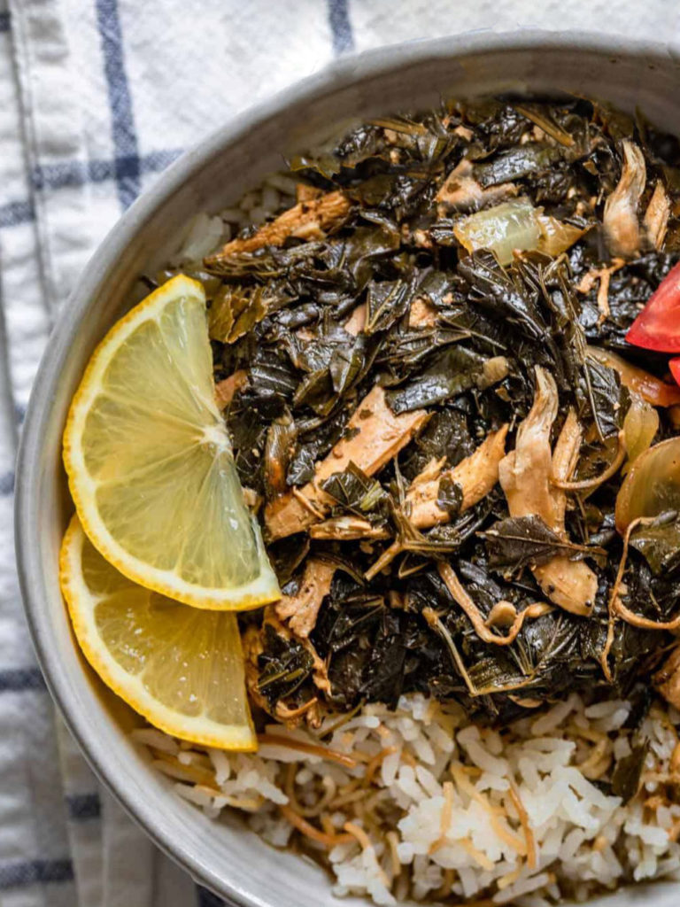

Molokhia

Description
Molokhia is a traditional dish that is popular in many Arab countries, particularly in Egypt, Sudan and the Levant region. The main ingredient in the dish is the leaves of the molokhia plant, which are finely chopped and cooked with a variety of spices, onions, garlic and often chicken or other meats.
The dish has a thick, green and slightly slimy texture, and is typically served over rice or with bread. Molokhia is known for its unique flavor, which is both earthy and savory, with a slightly tangy note from the lemon juice that is often added to the dish. It is a nutritious and filling meal that is enjoyed by many people in the Arab world.
Ingredients
- 1 bunch of fresh molokhia leaves (about 500g)
- 1 large onion, finely chopped
- 4 cloves of garlic, minced
- 2 tablespoons of coriander, finely chopped
- 2 tablespoons of olive oil
- 1 tablespoon of ground coriander
- 1 tablespoon of ground cumin
- 1 teaspoon of ground cinnamon
- 1 teaspoon of paprika
- 1 teaspoon of salt
- 1 teaspoon of black pepper
- 1 lemon, cut into wedges
- 1.5 litres of chicken or vegetable stock
- 500g of boneless chicken thighs, cut into small pieces (optional)
Steps
- Rinse the molokhia leaves in cold water and remove any tough stems. Chop the leaves finely and set aside.
- In a large pot, heat the olive oil over medium heat. Add the chopped onions and minced garlic and sauté until the onions are translucent.
- Add the chicken (if using) and cook until browned on all sides.
- Add the chopped molokhia leaves to the pot and stir well to combine with the onions, garlic and chicken.
- Add the ground coriander, cumin, cinnamon, paprika, salt and black pepper to the pot and stir to combine.
- Pour the chicken or vegetable stock over the mixture and bring to a boil.
- Reduce the heat to low and simmer the molokhia for about 30 minutes, stirring occasionally.
- Serve hot with a squeeze of lemon juice and some fresh coriander on top.
Enjoy!